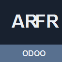

<section class="oe_container">
  <div class="oe_row oe_spaced">
    <h1>document_engine_arfr_account</h1>
    <p><strong>Compatibility:</strong> Odoo 19.0. License: LGPL-3.</p>
    <p>This addon is part of the Arabic/French Document Engine family. It keeps standard Odoo output unchanged until the relevant company, report, partner, POS configuration, or optional addon feature is explicitly enabled.</p>
    <h2>Features</h2>
    <ul>
      <li>Opt-in Arabic/French document presentation for the addon surface.</li>
      <li>RTL-aware layout conventions and Noto Arabic font integration.</li>
      <li>Western, Arabic-Indic, and automatic numeral policies where applicable.</li>
      <li>Regional currency display and localization coexistence support.</li>
    </ul>
    <h2>Installation</h2>
    <pre>odoo-bin -d your_db --addons-path=/path/to/odoo/addons,/path/to/arfr/addons -i document_engine_arfr_account</pre>
    <h2>Screenshots</h2>
    <p>Review the repository screenshot sets under <code>docs/screenshots/rtl/</code>, <code>docs/screenshots/pos/</code>, and <code>docs/screenshots/regional/</code>. Refresh those captures before final Apps Store upload.</p>
    <p></p>
  </div>
</section>
